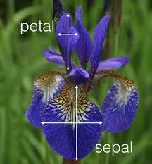
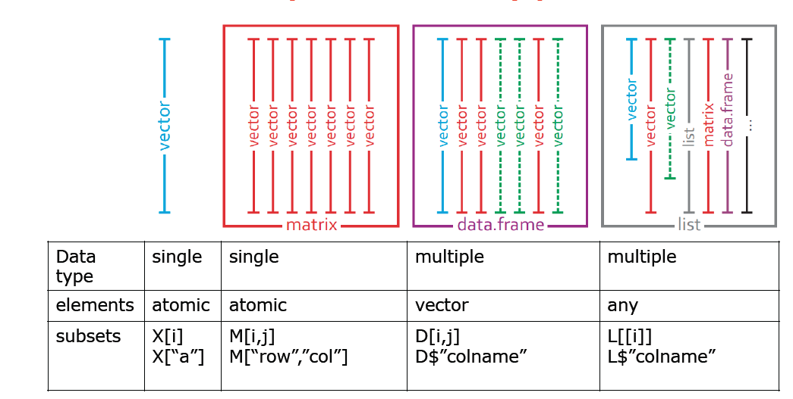

Code
data()Thomas Manke
March 26, 2023
Goal:
Real data is much more complex than simple vectors of numbers or strings.
Here we introduce new data structures, important functions, and some more jargon.
R comes with many pre-defined data sets. They are often used to illustrate statistical problems, data science concepts and functionality of software packages. Just type data() to get an overview.
data()One particularly famous data set is iris. We will use it throughout this course:

(Image from blog of mathieu.guillame-bert.com)
Tasks: Explore the iris data set
?iris to learn more about this data set.iris or View(iris). Why is this not the best way to explore data?Query:
How many samples and variables does this data set contain?
This iris data object is more complex than simple vectors discussed before.
Typical commands to explore such data objects are:
str(iris) # the structure'data.frame': 150 obs. of 5 variables:
$ Sepal.Length: num 5.1 4.9 4.7 4.6 5 5.4 4.6 5 4.4 4.9 ...
$ Sepal.Width : num 3.5 3 3.2 3.1 3.6 3.9 3.4 3.4 2.9 3.1 ...
$ Petal.Length: num 1.4 1.4 1.3 1.5 1.4 1.7 1.4 1.5 1.4 1.5 ...
$ Petal.Width : num 0.2 0.2 0.2 0.2 0.2 0.4 0.3 0.2 0.2 0.1 ...
$ Species : Factor w/ 3 levels "setosa","versicolor",..: 1 1 1 1 1 1 1 1 1 1 ...head(iris) # the first few lines Sepal.Length Sepal.Width Petal.Length Petal.Width Species
1 5.1 3.5 1.4 0.2 setosa
2 4.9 3.0 1.4 0.2 setosa
3 4.7 3.2 1.3 0.2 setosa
4 4.6 3.1 1.5 0.2 setosa
5 5.0 3.6 1.4 0.2 setosa
6 5.4 3.9 1.7 0.4 setosatail(iris,n=3) # last n lines Sepal.Length Sepal.Width Petal.Length Petal.Width Species
148 6.5 3.0 5.2 2.0 virginica
149 6.2 3.4 5.4 2.3 virginica
150 5.9 3.0 5.1 1.8 virginicaclass(iris) # data frame is a "class"[1] "data.frame"summary(iris) # works well with data_frames Sepal.Length Sepal.Width Petal.Length Petal.Width
Min. :4.300 Min. :2.000 Min. :1.000 Min. :0.100
1st Qu.:5.100 1st Qu.:2.800 1st Qu.:1.600 1st Qu.:0.300
Median :5.800 Median :3.000 Median :4.350 Median :1.300
Mean :5.843 Mean :3.057 Mean :3.758 Mean :1.199
3rd Qu.:6.400 3rd Qu.:3.300 3rd Qu.:5.100 3rd Qu.:1.800
Max. :7.900 Max. :4.400 Max. :6.900 Max. :2.500
Species
setosa :50
versicolor:50
virginica :50
dim(iris) # data frames ar 2D objects: rows x columns[1] 150 5Data Frames are built from vectors with identical lengths.

Programmatic access to specific subsets of data is key to all analyses.
There are many basic ways to achieve this - and even more in later sections.
d=iris # just to reduce typing
ir=1:3 # vector of row indices
ic=c(2,5) # vector of col indices
d[ir,ic] # selecting specific elements in 2D data frame Sepal.Width Species
1 3.5 setosa
2 3.0 setosa
3 3.2 setosair = c(7,20,19,69) # just some arbitrary choice of indices
d[ir,"Species"] # access by index and column by name[1] setosa setosa setosa versicolor
Levels: setosa versicolor virginicad$Species[ir] # the same, more common [1] setosa setosa setosa versicolor
Levels: setosa versicolor virginicad[,-5] # unselecting column 5 Sepal.Length Sepal.Width Petal.Length Petal.Width
1 5.1 3.5 1.4 0.2
2 4.9 3.0 1.4 0.2
3 4.7 3.2 1.3 0.2
4 4.6 3.1 1.5 0.2
5 5.0 3.6 1.4 0.2
6 5.4 3.9 1.7 0.4
7 4.6 3.4 1.4 0.3
8 5.0 3.4 1.5 0.2
9 4.4 2.9 1.4 0.2
10 4.9 3.1 1.5 0.1
11 5.4 3.7 1.5 0.2
12 4.8 3.4 1.6 0.2
13 4.8 3.0 1.4 0.1
14 4.3 3.0 1.1 0.1
15 5.8 4.0 1.2 0.2
16 5.7 4.4 1.5 0.4
17 5.4 3.9 1.3 0.4
18 5.1 3.5 1.4 0.3
19 5.7 3.8 1.7 0.3
20 5.1 3.8 1.5 0.3
21 5.4 3.4 1.7 0.2
22 5.1 3.7 1.5 0.4
23 4.6 3.6 1.0 0.2
24 5.1 3.3 1.7 0.5
25 4.8 3.4 1.9 0.2
26 5.0 3.0 1.6 0.2
27 5.0 3.4 1.6 0.4
28 5.2 3.5 1.5 0.2
29 5.2 3.4 1.4 0.2
30 4.7 3.2 1.6 0.2
31 4.8 3.1 1.6 0.2
32 5.4 3.4 1.5 0.4
33 5.2 4.1 1.5 0.1
34 5.5 4.2 1.4 0.2
35 4.9 3.1 1.5 0.2
36 5.0 3.2 1.2 0.2
37 5.5 3.5 1.3 0.2
38 4.9 3.6 1.4 0.1
39 4.4 3.0 1.3 0.2
40 5.1 3.4 1.5 0.2
41 5.0 3.5 1.3 0.3
42 4.5 2.3 1.3 0.3
43 4.4 3.2 1.3 0.2
44 5.0 3.5 1.6 0.6
45 5.1 3.8 1.9 0.4
46 4.8 3.0 1.4 0.3
47 5.1 3.8 1.6 0.2
48 4.6 3.2 1.4 0.2
49 5.3 3.7 1.5 0.2
50 5.0 3.3 1.4 0.2
51 7.0 3.2 4.7 1.4
52 6.4 3.2 4.5 1.5
53 6.9 3.1 4.9 1.5
54 5.5 2.3 4.0 1.3
55 6.5 2.8 4.6 1.5
56 5.7 2.8 4.5 1.3
57 6.3 3.3 4.7 1.6
58 4.9 2.4 3.3 1.0
59 6.6 2.9 4.6 1.3
60 5.2 2.7 3.9 1.4
61 5.0 2.0 3.5 1.0
62 5.9 3.0 4.2 1.5
63 6.0 2.2 4.0 1.0
64 6.1 2.9 4.7 1.4
65 5.6 2.9 3.6 1.3
66 6.7 3.1 4.4 1.4
67 5.6 3.0 4.5 1.5
68 5.8 2.7 4.1 1.0
69 6.2 2.2 4.5 1.5
70 5.6 2.5 3.9 1.1
71 5.9 3.2 4.8 1.8
72 6.1 2.8 4.0 1.3
73 6.3 2.5 4.9 1.5
74 6.1 2.8 4.7 1.2
75 6.4 2.9 4.3 1.3
76 6.6 3.0 4.4 1.4
77 6.8 2.8 4.8 1.4
78 6.7 3.0 5.0 1.7
79 6.0 2.9 4.5 1.5
80 5.7 2.6 3.5 1.0
81 5.5 2.4 3.8 1.1
82 5.5 2.4 3.7 1.0
83 5.8 2.7 3.9 1.2
84 6.0 2.7 5.1 1.6
85 5.4 3.0 4.5 1.5
86 6.0 3.4 4.5 1.6
87 6.7 3.1 4.7 1.5
88 6.3 2.3 4.4 1.3
89 5.6 3.0 4.1 1.3
90 5.5 2.5 4.0 1.3
91 5.5 2.6 4.4 1.2
92 6.1 3.0 4.6 1.4
93 5.8 2.6 4.0 1.2
94 5.0 2.3 3.3 1.0
95 5.6 2.7 4.2 1.3
96 5.7 3.0 4.2 1.2
97 5.7 2.9 4.2 1.3
98 6.2 2.9 4.3 1.3
99 5.1 2.5 3.0 1.1
100 5.7 2.8 4.1 1.3
101 6.3 3.3 6.0 2.5
102 5.8 2.7 5.1 1.9
103 7.1 3.0 5.9 2.1
104 6.3 2.9 5.6 1.8
105 6.5 3.0 5.8 2.2
106 7.6 3.0 6.6 2.1
107 4.9 2.5 4.5 1.7
108 7.3 2.9 6.3 1.8
109 6.7 2.5 5.8 1.8
110 7.2 3.6 6.1 2.5
111 6.5 3.2 5.1 2.0
112 6.4 2.7 5.3 1.9
113 6.8 3.0 5.5 2.1
114 5.7 2.5 5.0 2.0
115 5.8 2.8 5.1 2.4
116 6.4 3.2 5.3 2.3
117 6.5 3.0 5.5 1.8
118 7.7 3.8 6.7 2.2
119 7.7 2.6 6.9 2.3
120 6.0 2.2 5.0 1.5
121 6.9 3.2 5.7 2.3
122 5.6 2.8 4.9 2.0
123 7.7 2.8 6.7 2.0
124 6.3 2.7 4.9 1.8
125 6.7 3.3 5.7 2.1
126 7.2 3.2 6.0 1.8
127 6.2 2.8 4.8 1.8
128 6.1 3.0 4.9 1.8
129 6.4 2.8 5.6 2.1
130 7.2 3.0 5.8 1.6
131 7.4 2.8 6.1 1.9
132 7.9 3.8 6.4 2.0
133 6.4 2.8 5.6 2.2
134 6.3 2.8 5.1 1.5
135 6.1 2.6 5.6 1.4
136 7.7 3.0 6.1 2.3
137 6.3 3.4 5.6 2.4
138 6.4 3.1 5.5 1.8
139 6.0 3.0 4.8 1.8
140 6.9 3.1 5.4 2.1
141 6.7 3.1 5.6 2.4
142 6.9 3.1 5.1 2.3
143 5.8 2.7 5.1 1.9
144 6.8 3.2 5.9 2.3
145 6.7 3.3 5.7 2.5
146 6.7 3.0 5.2 2.3
147 6.3 2.5 5.0 1.9
148 6.5 3.0 5.2 2.0
149 6.2 3.4 5.4 2.3
150 5.9 3.0 5.1 1.8Usually we want to access (or subset) data if certain conditions are met
# select only species "setosa"
ib = d$Species == "setosa"
d[ib,] Sepal.Length Sepal.Width Petal.Length Petal.Width Species
1 5.1 3.5 1.4 0.2 setosa
2 4.9 3.0 1.4 0.2 setosa
3 4.7 3.2 1.3 0.2 setosa
4 4.6 3.1 1.5 0.2 setosa
5 5.0 3.6 1.4 0.2 setosa
6 5.4 3.9 1.7 0.4 setosa
7 4.6 3.4 1.4 0.3 setosa
8 5.0 3.4 1.5 0.2 setosa
9 4.4 2.9 1.4 0.2 setosa
10 4.9 3.1 1.5 0.1 setosa
11 5.4 3.7 1.5 0.2 setosa
12 4.8 3.4 1.6 0.2 setosa
13 4.8 3.0 1.4 0.1 setosa
14 4.3 3.0 1.1 0.1 setosa
15 5.8 4.0 1.2 0.2 setosa
16 5.7 4.4 1.5 0.4 setosa
17 5.4 3.9 1.3 0.4 setosa
18 5.1 3.5 1.4 0.3 setosa
19 5.7 3.8 1.7 0.3 setosa
20 5.1 3.8 1.5 0.3 setosa
21 5.4 3.4 1.7 0.2 setosa
22 5.1 3.7 1.5 0.4 setosa
23 4.6 3.6 1.0 0.2 setosa
24 5.1 3.3 1.7 0.5 setosa
25 4.8 3.4 1.9 0.2 setosa
26 5.0 3.0 1.6 0.2 setosa
27 5.0 3.4 1.6 0.4 setosa
28 5.2 3.5 1.5 0.2 setosa
29 5.2 3.4 1.4 0.2 setosa
30 4.7 3.2 1.6 0.2 setosa
31 4.8 3.1 1.6 0.2 setosa
32 5.4 3.4 1.5 0.4 setosa
33 5.2 4.1 1.5 0.1 setosa
34 5.5 4.2 1.4 0.2 setosa
35 4.9 3.1 1.5 0.2 setosa
36 5.0 3.2 1.2 0.2 setosa
37 5.5 3.5 1.3 0.2 setosa
38 4.9 3.6 1.4 0.1 setosa
39 4.4 3.0 1.3 0.2 setosa
40 5.1 3.4 1.5 0.2 setosa
41 5.0 3.5 1.3 0.3 setosa
42 4.5 2.3 1.3 0.3 setosa
43 4.4 3.2 1.3 0.2 setosa
44 5.0 3.5 1.6 0.6 setosa
45 5.1 3.8 1.9 0.4 setosa
46 4.8 3.0 1.4 0.3 setosa
47 5.1 3.8 1.6 0.2 setosa
48 4.6 3.2 1.4 0.2 setosa
49 5.3 3.7 1.5 0.2 setosa
50 5.0 3.3 1.4 0.2 setosa# select species "setosa" and "small Sepal.Width")
ib=(d$Species=="setosa") & (d$Sepal.Width<3)
d[ib,] Sepal.Length Sepal.Width Petal.Length Petal.Width Species
9 4.4 2.9 1.4 0.2 setosa
42 4.5 2.3 1.3 0.3 setosaTask:
ib in the above examples and understand what is meant with “access by truth value”.d$x = 1:3 # simple, but useless
head(d,10) Sepal.Length Sepal.Width Petal.Length Petal.Width Species x
1 5.1 3.5 1.4 0.2 setosa 1
2 4.9 3.0 1.4 0.2 setosa 2
3 4.7 3.2 1.3 0.2 setosa 3
4 4.6 3.1 1.5 0.2 setosa 1
5 5.0 3.6 1.4 0.2 setosa 2
6 5.4 3.9 1.7 0.4 setosa 3
7 4.6 3.4 1.4 0.3 setosa 1
8 5.0 3.4 1.5 0.2 setosa 2
9 4.4 2.9 1.4 0.2 setosa 3
10 4.9 3.1 1.5 0.1 setosa 1